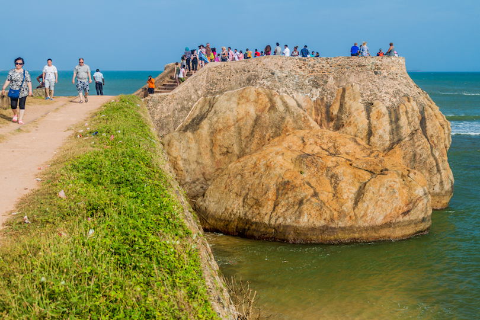

Flag Rock

Perched atop the ramparts of Galle Fort in Sri Lanka, Galle Flag Rock is a prominent landmark that offers breathtaking panoramic
views of the Indian Ocean. This rocky outcrop, adorned with a flagpole, holds great historical significance and serves as a symbol
of Galle's maritime heritage. The flag has historically been used to communicate with passing ships, indicating the availability
of harbor facilities or conveying important messages.
Galle Flag Rock's location within the fortified walls of Galle Fort highlights its strategic importance. The fort itself has a rich history, dating back to the 16th century when the Portuguese first established their presence in Sri Lanka. Over the centuries, the fort was fortified and expanded by the Dutch and the British, serving as a stronghold for various colonial powers. Galle Flag Rock, situated on the fort's ramparts, played a crucial role in signaling incoming ships and facilitating trade.
The significance of Galle Flag Rock extends beyond its practical purpose. It serves as a symbol of the city's maritime heritage and its strategic location along ancient trade routes. The rock has witnessed the arrival of numerous traders, explorers, and colonial powers throughout history. Today, it stands as a popular spot for tourists to enjoy stunning sunsets, take in the fresh sea breeze, and capture memorable photographs against the backdrop of the ocean.
Galle Flag Rock is not only a testament to Galle's seafaring past but also a symbol of resilience. Despite the passage of time and the challenges faced by the city, the flag continues to fly proudly, serving as a reminder of Galle's enduring spirit and its connection to the sea. It remains a must-visit destination for those seeking a glimpse into the city's rich history and natural beauty.
Galle Flag Rock's location within the fortified walls of Galle Fort highlights its strategic importance. The fort itself has a rich history, dating back to the 16th century when the Portuguese first established their presence in Sri Lanka. Over the centuries, the fort was fortified and expanded by the Dutch and the British, serving as a stronghold for various colonial powers. Galle Flag Rock, situated on the fort's ramparts, played a crucial role in signaling incoming ships and facilitating trade.
The significance of Galle Flag Rock extends beyond its practical purpose. It serves as a symbol of the city's maritime heritage and its strategic location along ancient trade routes. The rock has witnessed the arrival of numerous traders, explorers, and colonial powers throughout history. Today, it stands as a popular spot for tourists to enjoy stunning sunsets, take in the fresh sea breeze, and capture memorable photographs against the backdrop of the ocean.
Galle Flag Rock is not only a testament to Galle's seafaring past but also a symbol of resilience. Despite the passage of time and the challenges faced by the city, the flag continues to fly proudly, serving as a reminder of Galle's enduring spirit and its connection to the sea. It remains a must-visit destination for those seeking a glimpse into the city's rich history and natural beauty.